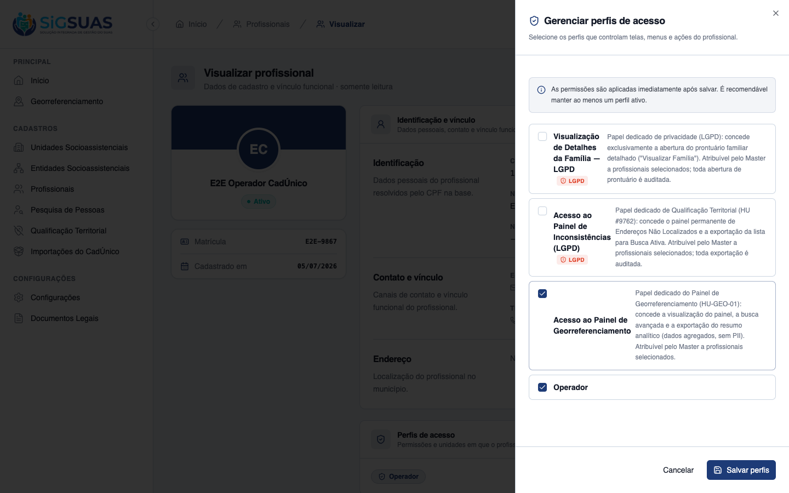
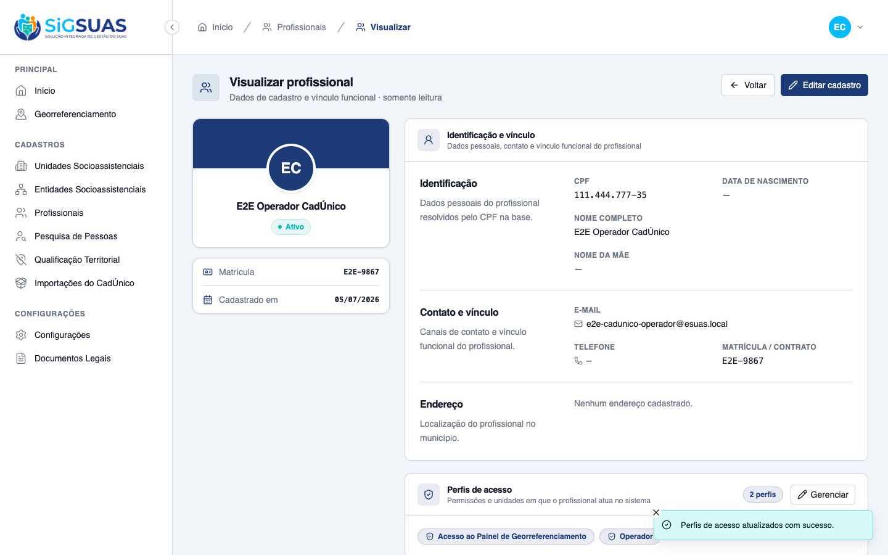
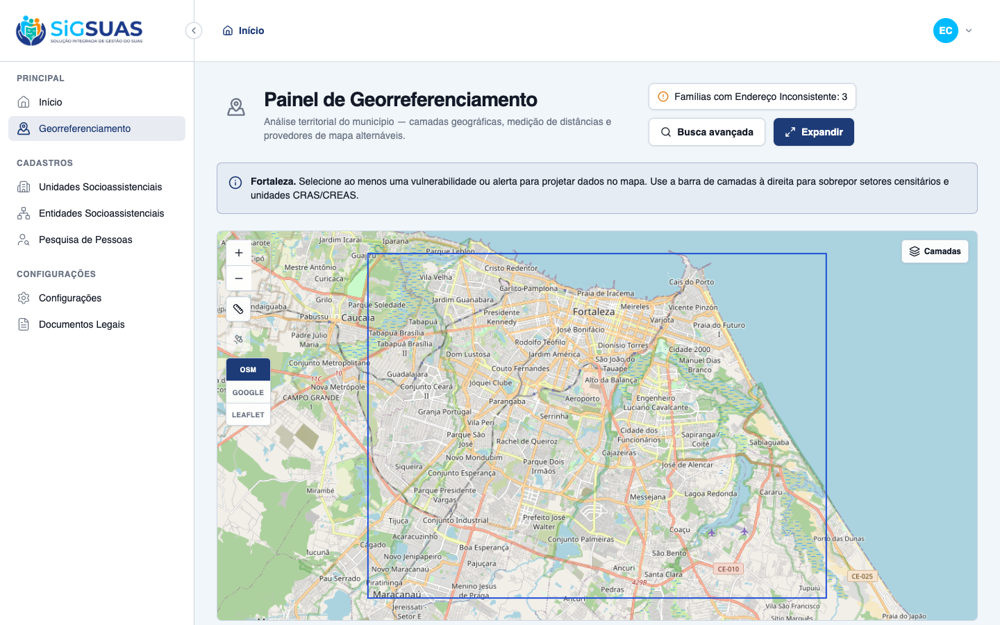
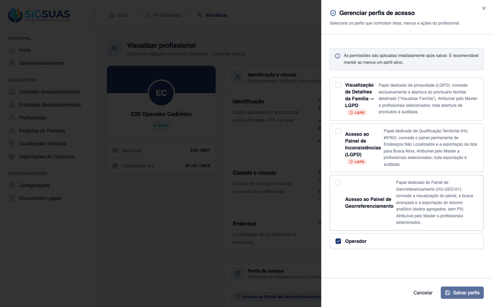

1 critério de aceite (CA10). A governança — papel add-on dedicado "Acesso ao Painel de Georreferenciamento" (geo_panel_viewer, level 27), atribuível e revogável pelo Master no drawer "Gerenciar perfis de acesso" da tela de detalhes do Profissional — foi entregue na HU-GEO-01 (#9862), no molde dos papéis LGPD das HUs #9760/#9762; esta HU (#9867) é 100% evidência, sem código novo. O ciclo completo foi dirigido ao vivo: operador SEM o perfil (menu ausente), Master vincula o perfil no detalhe do profissional e salva (aplicação imediata), o usuário do profissional passa a ver o menu Georreferenciamento e abre o painel, e por fim o Master REVOGA o perfil (o vínculo volta ao estado original — confirmado no banco: apenas papel operador). Segurança: permissões geo-panel.* são RESTRITAS (não herdadas pelo operador comum) e o papel é isolado por tenant. Regressão: Pest geo-panel 51 testes / 186 asserções (inclui matriz de autorização 403/tenant).
| CA | Critério | Status |
|---|---|---|
| CA10 | Atribuição de perfil pelo Master com efeito imediato (PO) | ATENDIDO · navegador |
Critério (Gherkin): Dado que sou Master e acesso a área de detalhes de um profissional do município, Quando vinculo o perfil de inteligência territorial ao seu cadastro e salvo, Então o Usuário atrelado a ele passa a visualizar o menu de Georreferenciamento de forma imediata.
Como foi testado: 1) Login como operador (sem o perfil) → menu Georreferenciamento AUSENTE. 2) Login como Master → Profissionais → Visualizar "E2E Operador CadÚnico" → card Perfis de acesso → Gerenciar → marcar Acesso ao Painel de Georreferenciamento → Salvar perfis. 3) Login como operador → menu presente → abrir o painel. 4) Master REVOGA o perfil (drawer) → banco restaurado (papel operador apenas).




PASS Tests\Unit\Services\Geo\GeoPanelQueryServiceTest ✓ it filters extreme_poverty by per_capita_income against the configu… 0.32s ✓ it filters single_person as exactly one ACTIVE member 0.03s ✓ it filters receives_pbf on the family flag 0.01s ✓ it filters member flags (child_labor, homeless_situation, has_disab… 0.05s ✓ it filters indigenous_quilombola as an OR between the two family fl… 0.02s ✓ it filters gpte by any traditional group, refinable by traditional_… 0.02s ✓ it intersects multiple criteria with AND (RN06) 0.03s ✓ it classifies expired as more than 24 months since source_updated_a… 0.02s ✓ it classifies expiring as between 19 and 24 months since source_upd… 0.02s ✓ it restricts by sector_uuid (SQLite fallback: sector city = family… 0.02s ✓ it aggregates by sector, groups anonymous points and computes the b… 0.02s ✓ it ignores families without an active locatable address point 0.02s ✓ it scopes every aggregate to the given tenant (RN01) 0.02s ✓ it validates that a sector belongs to the tenant municipality (RN08… 0.01s PASS Tests\Feature\Api\Client\GeoPanelExportTest ✓ it creates a pending export with the immutable filters snapshot and… 0.06s ✓ it blocks the export with 422 and the guidance message when no effe… 0.02s ✓ it requires the map image for pdf exports and stores it under the t… 0.03s ✓ it rejects a map image that is not a base64 png 0.02s ✓ it lists and shows only the exports of the active tenant, 404 on cr… 0.03s ✓ it downloads a completed export and refuses one still pending 0.03s ✓ it generates the xlsx from the filters snapshot with the tenant pre… 0.04s ✓ it generates the pdf composing the map image sent by the client (CA… 0.13s ✓ it marks the export as failed with the error message when the job f… 0.02s ✓ it neutralizes formula injection on every text cell of the spreadsh… 0.01s PASS Tests\Feature\Api\Client\GeoPanelLayerDataTest ✓ it merges a globally published layer after the builtins, keeping th… 0.02s ✓ it shows a selected-audience layer only to the covered tenant (CA43… 0.02s ✓ it never lists draft or inactive layers on the tenant panel (CA48/R… 0.02s ✓ it reflects audience/status changes on the very next fetch — no cac… 0.02s ✓ it executes the layer criteria strictly under each consumer tenant… 0.03s ✓ it answers 404 (never 403) for a layer that is not visible to the t… 0.03s ✓ it serves the CURRENT definition of the layer — an admin edit refle… 0.03s ✓ it shapes the payload by representation: markers, boundaries and he… 0.03s ✓ it denies the layer data endpoint to an operator without the geo_pa… 0.02s PASS Tests\Feature\Api\Client\GeoPanelTest ✓ it returns the tenant municipality with geometry, centroid and the… 0.04s ✓ it responds 409 geo_panel.city_unavailable when the tenant has no r… 0.02s ✓ it responds 409 when the municipality geometry exists but is inacti… 0.02s ✓ it lists exactly the 3 builtin layers with the stable contract (CA2… 0.02s ✓ it serves the census sectors of the tenant municipality as a GeoJSO… 0.02s ✓ it serves the tenant social units as anonymous points with type_cod… 0.02s ✓ it applies the AND intersection of combined criteria scoped to the… 0.03s ✓ it never leaks families from another tenant in the search (RN01/CA3… 0.02s ✓ it returns an empty payload when no record matches, so the map stay… 0.02s ✓ it rejects a search without any effective criterion (Seção 10 — reg… 0.02s ✓ it rejects a sector_uuid that belongs to another municipality (RN08… 0.02s ✓ it always includes the fixed RN07 indicator in the summary, even wi… 0.03s ✓ it aggregates the summary by census sector under the active filters… 0.02s ✓ it denies every geo-panel endpoint to the base operator without the… 0.02s ✓ it grants the full panel to the operator once the geo_panel_viewer… 0.03s ✓ it grants the full panel to the Master without any add-on role (RN2… 0.02s ✓ it does not let the geo_panel_viewer role in Tenant A open the pane… 0.02s ✓ it exposes geo_panel_viewer as an add-on role, never a hierarchy po… 0.02s Tests: 51 passed (186 assertions) Duration: 1.87s